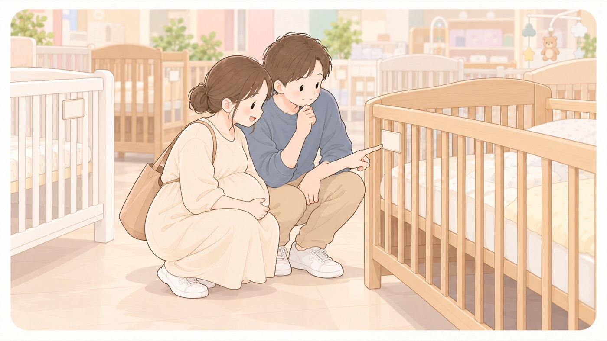

選ぶとき
ベビーベッドと、子供PSCマーク
2025年12月に制度が始まった。買うときにマークを確かめる
2025年12月25日から、乳幼児用ベッドに子供PSCマークPSCマークのうち、主に子どもが使う製品を対象にしたもの。2025年12月に3歳未満向けおもちゃとベビーベッドで、2026年7月にベッドガードとベビーカーで表示が義務になった。国の技術基準への適合と、対象年齢・警告表示の表示が求められる。を表示する制度が始まりました。このマークが付いた製品は国の技術基準に適合していて、対象年齢や使用上の注意を表示することも義務づけられています。ただし2027年3月24日までは、従来のひし形のPSCマーク消費生活用製品安全法で、国が定めた基準を満たさないと販売できない製品に付く義務のマーク。ベビーベッドやライターが対象。が付いた製品も売られています。どちらかのマークがあることを確かめて買います。

- すること：子供PSCマークか、ひし形のPSCマークがあることを確かめる
2027年3月24日までは、どちらの表示の製品も売られています。マークは製品本体に貼られています。 - すること：説明書を読んで、対象年齢と使い方を確かめる
子供PSCマークPSCマークのうち、主に子どもが使う製品を対象にしたもの。2025年12月に3歳未満向けおもちゃとベビーベッドで、2026年7月にベッドガードとベビーカーで表示が義務になった。国の技術基準への適合と、対象年齢・警告表示の表示が求められる。の付いた製品には、対象年齢と使用上の注意を表示することも義務づけられています。買ってから読むのではなく、使い始める前に読みます。 - しないこと：マークのない中古品を、確かめずに使わない
子供PSCマークPSCマークのうち、主に子どもが使う製品を対象にしたもの。2025年12月に3歳未満向けおもちゃとベビーベッドで、2026年7月にベッドガードとベビーカーで表示が義務になった。国の技術基準への適合と、対象年齢・警告表示の表示が求められる。の制度は2025年12月に始まったばかりなので、それ以前に作られたベビーベッドにはこのマークがありません。親族から譲られたものを使うなら、ひし形のPSCマーク消費生活用製品安全法で、国が定めた基準を満たさないと販売できない製品に付く義務のマーク。ベビーベッドやライターが対象。があるか、柵のすき間や底板の状態に傷みがないかを見ます。
🛍 グッズの選び方
PR- 新生児のうちは、床に近いベッドより高さのあるもののほうが、腰をかがめずに寝かせられます。
- 部屋が狭いなら、折りたためるタイプだと、使わない時期にしまえます。
- 大人のベッドの横に並べて使う形のものもあります。同じ部屋で、赤ちゃん専用の寝床を用意するという考え方に合います。
- アップリカ ココネルエアー AB（PSCマーク）PSCマーク付き。折りたためるAmazonで見る →
- カトージ ハイシートミニベビーベッドII プレミアム（新生児〜）床板を高くできる。新生児から使えるAmazonで見る →
- コンビ すくすや トモネル ベビーベッド＆サークル コンパクト🏅 第18回キッズデザイン賞（すくすや トモネル ベビーベッド コンパクト）Amazonで見る →
- 石崎家具 日本製 木製ベビーベッド ワンタッチハイベッド クール木製で安定。床板の高さを変えられるAmazonで見る →
リンクはAmazonアソシエイトリンクです。当サイトはアフィリエイトプログラムに参加しています。Amazonのアソシエイトとして、当サイトは適格販売により収入を得ています。 選び方の方針
この項目の根拠
- みんなの消費安全ナビ Vol.677 こども向けの製品に関する新しい制度、「子供PSCマーク」がはじまりました！（消費者庁）（新しいタブで開きます）
2025年12月25日から乳幼児用玩具と乳幼児用ベッドへの子供PSCマークの表示制度が始まったこと、このマークが付いた製品は国の技術基準に適合していることに加えて対象年齢や使用上の注意に関する警告表示が義務づけられていること、乳幼児用ベッドについては2027年3月24日までは従来のひし形PSCマークが表示された製品も販売されること、子供PSCマーク付きのベビーベッドを選び説明書をよく読んで対象年齢や使い方を必ずチェックすること。 - 赤ちゃんが安全に眠れるように ～1歳未満の赤ちゃんを育てるみなさまへ～（こども家庭庁）（新しいタブで開きます）
ベビーベッドやベッド柵などは、国が定めた安全基準の検査に合格した製品を選び、説明書をよく読んで対象年齢や使い方を必ずチェックすること。大人と同じ部屋で、赤ちゃん専用の寝床を使用すること。